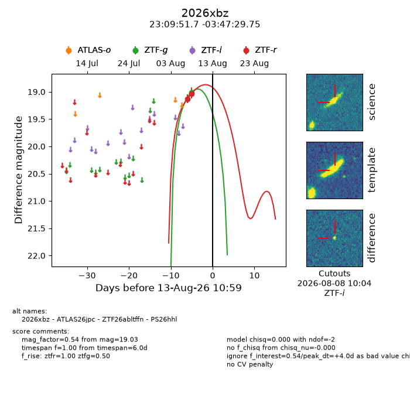
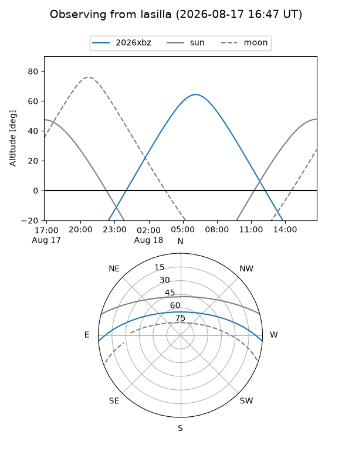
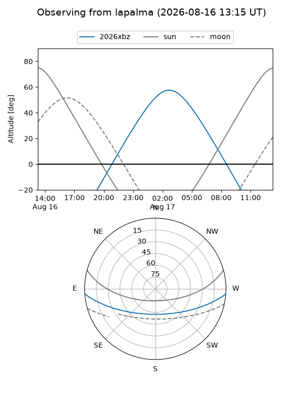
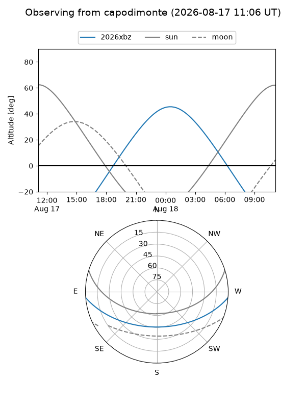
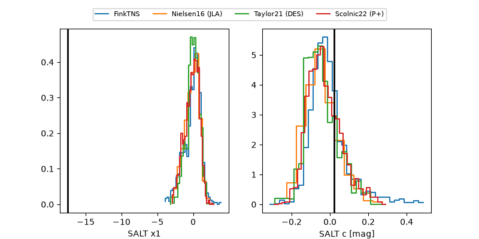

2026xbz
Target 2026xbz at 2026-08-13 11:02
Aliases and brokers:
FINK-ZTF: ztf.fink-portal.org/ZTF26abltffn
Lasair-ZTF: lasair-ztf.lsst.ac.uk/objects/ZTF26abltffn
ALeRCE-ZTF: alerce.online/object/ZTF26abltffn
YSE-PZ: ziggy.ucolick.org/yse/transient_detail/2026xbz
TNS name: wis-tns.org/object/2026xbz
Direct TNS query: direct search
alt names
ZTF26abltffn (ztf,fink_ztf)
2026xbz (tns,yse)
ATLAS26jpc (atlas)
PS26hhl (panstarrs)
Coordinates:
equatorial (ra, dec) = 347.4656,-3.79160
equatorial (HMS+DMS) = 23:09:51.74,-03:47:29.75
galactic (l, b) = (72.3872,-56.34521)
Flags:
TNS type: nan
peak dt: +4.0
Photometry:
last ztfg=19.01, ztfr=19.03
1 ztfg, 2 ztfr detections
Lightcurve

Visibility



Additional plots
